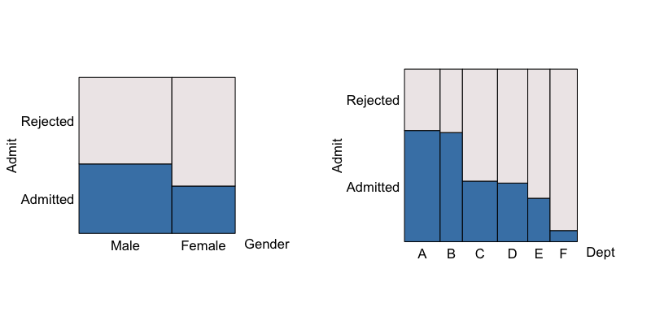
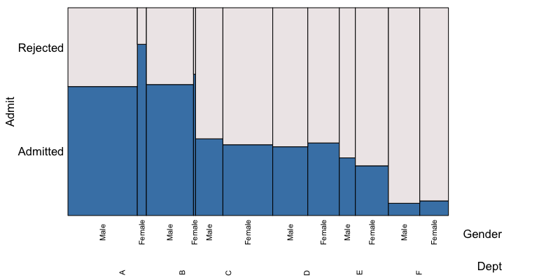
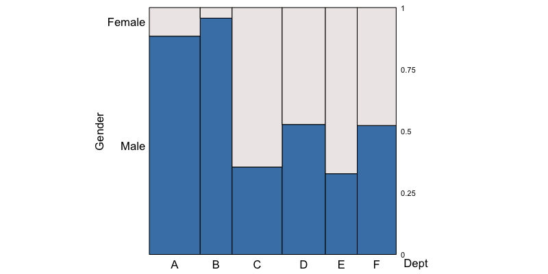
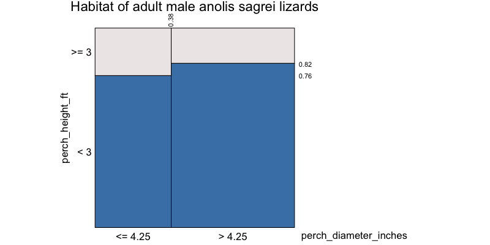
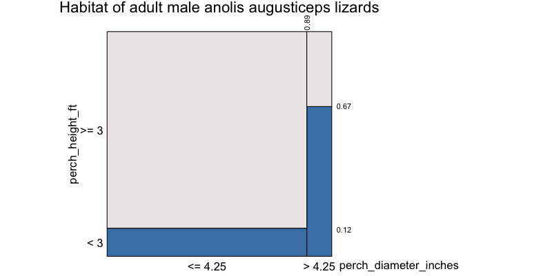
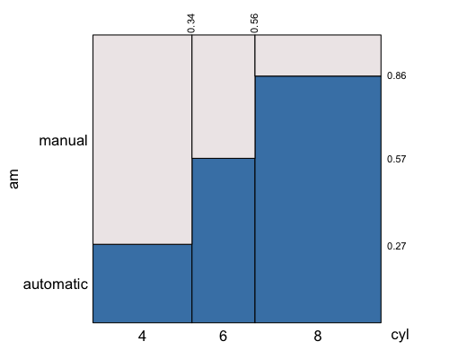
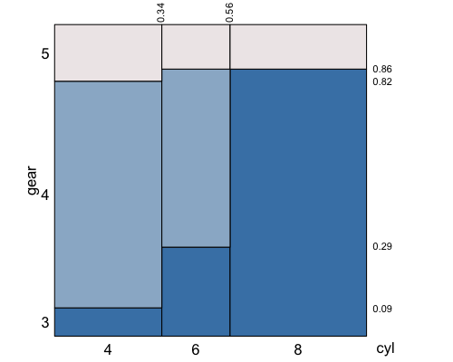
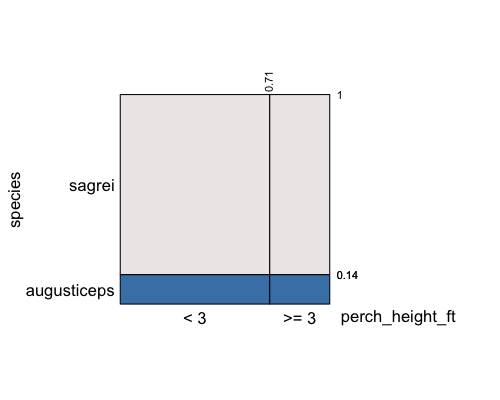
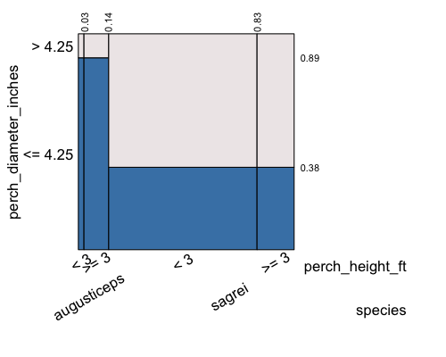

The other vignettes emphasize the use of eikosograms in understanding probability and relations between categorical variates. Here, we just give a few example of the use of eikosograms in data analysis.
Because categorical data can present itself in a variety of forms
(e.g. tables, factors in a data frame, etc.),
the illustrations centre around different types of data structure
tables
Contingency tables (multi-way tables or “data cubes”) are possibly the most common arrangement of categorical data. They are used, for example, in the introductory vignette.
Here, we present a simple analysis of the University of California (Berkeley) graduate school admissions.
Note that eikosograms are grid objects
(eikos() returns a grob) and so may be
manipulated as any other. For example, several eikosograms could appear
in the same display using grid.arrange() (from the
gridExtra package).
library(eikosograms)
library(gridExtra)University administrators were apparently alarmed (as they often are) when they looked at the numbers and saw the relationship between gender and admission rates.
e1 <- eikos(Admit ~ Gender, data = UCBAdmissions,
yaxs = FALSE, xaxs = FALSE,
draw = FALSE)
e2 <- eikos(Admit ~ Dept, data = UCBAdmissions,
yaxs = FALSE, xaxs = FALSE,
draw = FALSE)
# Using the gridExtra package, draw these in a single plot
grid.arrange(e1, e2, nrow = 1)
At left we see that male applicants are admitted more frequently than female applicants, suggesting a possible gender bias to university administrators. At right, we see that some departments admit more applicants than others, suggesting some may be more difficult to get into than others.
When all three variates are considered together, the true story emerges
eikos(Admit ~ Gender + Dept, data = UCBAdmissions,
yaxs = FALSE, xaxs = FALSE,
lock_aspect = FALSE,
xlab_rot = 90, xvals_size = 8,
ispace = list(bottom = 15)) In all departments but C and E (which are near equal), a greater proportion of female applicants were accepted than males. This is a famous example of Simpson’s paradox. As can be seen perhaps more clearly from the following eikosogram, the reason for the apparent favouritism towards male applicants occured only because a great many more males than females applied to those departments with the highest admission rates. And in those departments (A and B) the admission rates for females was much higher than that for males!
 Female applicants outnumber male applicants only in departments C and E.
cross tabulation
Sometimes the counts appear as a column in a spreadsheet (or
data.frame). Here we consider the counts for habitat type
of adult male anolis lizards from Bimini. These are
taken from Schoener (1968) and are saved
here as a text file.
lizards <- read.table("data/AnolisLizards.txt", header=TRUE)
lizards## species perch_height_ft perch_diameter_inches count
## 1 sagrei >= 3 <= 4.25 15
## 2 sagrei >= 3 > 4.25 18
## 3 sagrei < 3 <= 4.25 48
## 4 sagrei < 3 > 4.25 84
## 5 augusticeps >= 3 <= 4.25 21
## 6 augusticeps >= 3 > 4.25 1
## 7 augusticeps < 3 <= 4.25 3
## 8 augusticeps < 3 > 4.25 2As can be seen, there are three categorical variates, the
species of the anolis lizard, the height (in feet)
of where it was observed, and the diameter (in inches) of the branch on
which it was perched. The number of such observations is given as the
fourth variable, count.
For example, this can be a very convenient form of the data for selecting subsets, particularly for large data sets. Here we might separate the two species:
sagrei <- lizards[lizards$species == "sagrei", -1]
augusticeps <- lizards[lizards$species == "augusticeps", -1]Following Fienberg (1980), we might
first consider the relation between perch height and perch diameter for
the sagrei species. To look at the eikosigram, these need
to be turned into a table using the cross-tabulation
xtabs() function:
sagreiTable <- xtabs(count ~ perch_height_ft + perch_diameter_inches, data = sagrei)and draw it
eikos(perch_height_ft ~ perch_diameter_inches, data = sagreiTable,
main = "Habitat of adult male anolis sagrei lizards")
The two heights of the bars are very nearly the same, suggesting that the height and the diameter of the perch might be independent variates for the anolis sagrei lizard of Bimini. Indeed, a formal test of independence gives no evidence against this hypothesis.
chisq.test(sagreiTable)##
## Pearson's Chi-squared test with Yates' continuity correction
##
## data: sagreiTable
## X-squared = 0.57934, df = 1, p-value = 0.4466Now, were we to consider the same for anolis augusticeps, first the table
augusticepsTable <- xtabs(count ~ perch_height_ft + perch_diameter_inches, data = augusticeps)and then its probability picture
eikos(perch_height_ft ~ perch_diameter_inches, data = augusticepsTable,
main = "Habitat of adult male anolis augusticeps lizards")
Clearly, the bars do not appear to be of equal height. That the eikosogram is not even nearly flat is suggestive that perch height and diameter are not independent for the species anolis augusticeps. However, there needs to be some caution exercised here. As with anolis sagrei, one needs to formally test the hypothesis of independence for a sample of counts. There are so few observations (1,2, and 3 in three cells and 21 in the largest) that any formal test will also show no evidence against the hypothesis of independence in this case. (This includes a line up test using eikosograms as the display for each generated data set!)
All three variates could be examined at once by producing the three
way cross-classified table and the corresponding eikosograms. Following
Fienberg (1980), we first consider the
relation between perch height and perch diameter for the
sagrei species of the anolis lizard. The table
lizardsTable <- xtabs(count ~ species + perch_height_ft + perch_diameter_inches,
data = lizards)and its picture

listings (data frame rows)
The final way in which categorical data is commonly presented is in a
listing (e.g. data.frame) where each row corresponds to a
single occurrence of that combination of values for the variates.
For example, consider the mtcars dataset in
R, the first few rows of which are
| mpg | cyl | disp | hp | drat | wt | qsec | vs | am | gear | carb | |
|---|---|---|---|---|---|---|---|---|---|---|---|
| Mazda RX4 | 21.0 | 6 | 160 | 110 | 3.90 | 2.620 | 16.46 | 0 | 1 | 4 | 4 |
| Mazda RX4 Wag | 21.0 | 6 | 160 | 110 | 3.90 | 2.875 | 17.02 | 0 | 1 | 4 | 4 |
| Datsun 710 | 22.8 | 4 | 108 | 93 | 3.85 | 2.320 | 18.61 | 1 | 1 | 4 | 1 |
| Hornet 4 Drive | 21.4 | 6 | 258 | 110 | 3.08 | 3.215 | 19.44 | 1 | 0 | 3 | 1 |
| Hornet Sportabout | 18.7 | 8 | 360 | 175 | 3.15 | 3.440 | 17.02 | 0 | 0 | 3 | 2 |
| Valiant | 18.1 | 6 | 225 | 105 | 2.76 | 3.460 | 20.22 | 1 | 0 | 3 | 1 |
Although all of these variables are numeric, it is clear that many of
them could be treated as categorical. For example, vs is a
simple indicator variable indicating the shape of the engine block –
0 if it the cylinders are arranged in a “V” pattern and 1
if they are aligned in a straight line. This variable might instead have
been represented as a factor. The same could be said of the
variable am which is also a binary variable indicating
0 for an automatic transmission and 1 for a manual.
To make the point, we replace these two numeric variables by factors.
mtcars$vs <- factor(mtcars$vs, labels = c("V-shaped", "straight"))
mtcars$am <- factor(mtcars$am, labels = c("automatic", "manual"))so that the first few rows of mtcars now look like
| mpg | cyl | disp | hp | drat | wt | qsec | vs | am | gear | carb | |
|---|---|---|---|---|---|---|---|---|---|---|---|
| Mazda RX4 | 21.0 | 6 | 160 | 110 | 3.90 | 2.620 | 16.46 | V-shaped | manual | 4 | 4 |
| Mazda RX4 Wag | 21.0 | 6 | 160 | 110 | 3.90 | 2.875 | 17.02 | V-shaped | manual | 4 | 4 |
| Datsun 710 | 22.8 | 4 | 108 | 93 | 3.85 | 2.320 | 18.61 | straight | manual | 4 | 1 |
| Hornet 4 Drive | 21.4 | 6 | 258 | 110 | 3.08 | 3.215 | 19.44 | straight | automatic | 3 | 1 |
| Hornet Sportabout | 18.7 | 8 | 360 | 175 | 3.15 | 3.440 | 17.02 | V-shaped | automatic | 3 | 2 |
| Valiant | 18.1 | 6 | 225 | 105 | 2.76 | 3.460 | 20.22 | straight | automatic | 3 | 1 |
The eikosogram of these two factors can be compared without
contructing a table; eikos() does the counting of matching
rows to produce the picture.
eikos(am ~ vs, data = mtcars)
This matching does not depend on the variables being
factors. Any variable in a data.frame would do and
would be treated as if it were categorical. In the mtcars
data, there are several variables that are effectively ordinal
categorical variates, namely cyl, gear,
and carb.
These too could be explored using eikosograms. Transmission type versus number of cylinders
eikos(am ~ cyl, data = mtcars)
and number of forward gears versus number of cylinders
eikos(gear ~ cyl, data = mtcars)
fitted models
There are numerous types of models that can be fitted to categorical
data. One of the more popular are generalized linear models. For
example, we might fit a log-linear model to the lizards
habitat data.
fittedModel <- glm(count ~ species + perch_height_ft,
family="poisson",
data = lizards)This is a “main effects” only model and contains no interaction term.
To see what this model asserts about the relationship between
species and perch_height, we need to use the
fitted.values from the model as the expected
counts. A new data.frame is constructed from the
fit as follows:
# Can simply append the fitted values to the lizards to get a new data frame
lizardsFit <- data.frame(lizards, fit = fittedModel$fitted.values)
# and create the table
fitTable <- xtabs(fit ~ species + perch_height_ft, data=lizardsFit)The eikosogram corresponding to the model fitted to these two variables is
eikos("species", "perch_height_ft", data = fitTable)
from which we can see that the model is asserting that
species and perch_height_ft are independently
distributed. In log-linear modelling, independence and conditional
independence are asserted by the interaction terms which appear in these
(hierarchical) models.
For example, the following model forces independence between
perch_height_ft and perch_diameter_inches,
conditional on species.
fittedModel3way <- glm(count ~ species + perch_height_ft + perch_diameter_inches +
perch_height_ft * species +
perch_diameter_inches * species,
family="poisson",
data = lizards)The absence of the terms
perch_height_ft * perch_diameter_inches and
perch_height_ft * perch_diameter_inches * species means
that when species is held fixed, the terms
perch_height_ft and perch_diameter_inches are
sepable in the model. Hence they are conditionally independent. As
before, we can see this by viewing the eikosogram for the fitted
values.
# Can simply append the fitted values to the lizards to get a new data frame
lizardsFit3way <- data.frame(lizards, fit = fittedModel3way$fitted.values)
# and create the table
fitTable3way <- xtabs(fit ~ species + perch_height_ft + perch_diameter_inches, data=lizardsFit3way)
# and show the eikosograms
eikos(y = "perch_diameter_inches", x = c("perch_height_ft", "species"), data = fitTable3way,
xlab_rot = 30) and the conditional independence asserted by the model becomes obvious. See also vignette on independence exploration.